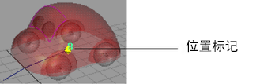
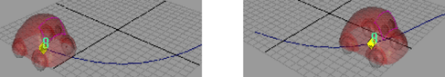

以下步骤说明如何在运动路径上放置标记，供您用于调整动画对象沿路径的方向或速度。
创建位置标记
- 在“时间滑块”(Time Slider)中，单击要添加位置标记的帧。
对象将移动到运动路径上的该位置。
- 在“通道盒”(Channel Box)中，展开 motionPath 节点。
- 如下所示在“U 值”(U Value)标签上设置关键帧：在(U Value > Key Selected)上单击鼠标右键。
- 如果要验证是否已创建位置标记，请沿路径单击其他位置以移动对象，使其远离新标记，然后单击新标记。

如果您在该标记处看到一个黄色框，这就是位置标记。
创建方向标记
- 在“时间滑块”(Time Slider)中，单击要添加位置标记的帧。
对象将移动到运动路径上的该位置。
- 在“通道盒”(Channel Box)中，展开 motionPath 节点。
- 在扭曲值标签之一上设置关键帧。
例如，若要设置“侧方向扭曲”(Side Twist)值的关键帧，请在(Side Twist > Key Selected)上单击鼠标右键
在场景视图中，方向标记由一个小点和一个数字表示。在某些视图中，每个方向标记处都会显示三个轴。
移动位置标记
- 选择要移动的标记。
- 选择“工具箱”(Tool Box)中的“移动工具”(Move Tool)，然后沿运动路径滑动位置标记。

当位置标记沿路径移动时，任何相邻的方向标记都会朝同一方向移动。
删除标记（位置或方向类型）
- 在场景视图中选择相应的标记并按 Delete 键。